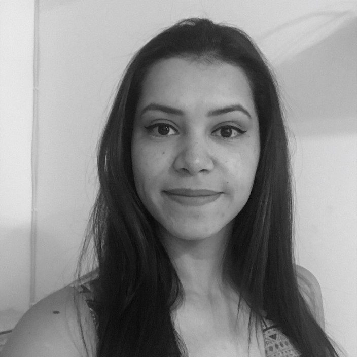
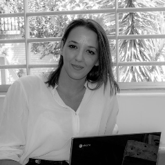

EQUIPO
Marea Coders es una nueva generación de programadoras web. Nuestra
versatilidad y experiencia en distintos sectores profesionales nos aporta
una amplia perspectiva a la hora de identificar necesidades y
oportunidades de cara a ofrecer un resultado que cumpla las expectativas
del cliente y usuario de forma eficaz y eficiente.
Fortalezas
Somos un equipo versátil en el que destaca una gran capacidad de
adaptación al cambio y, además, contamos con las herramientas y
conocimientos necesarios para trabajar de forma remota sin detrimento de
la comunicación entre el cliente y el equipo y la consecución de
objetivos. Trabajamos desde la innovación y el compromiso.
Debilidades
Estamos empezando en el sector, sin embargo contamos con las
herramientas, recursos, conocimientos y ganas necesarias para sacar
adelante cualquier proyecto.

Alejandra Calderón
Soy Trabajadora Social, profesional multifacética con gran capacidad
de liderazgo, trabajo en equipo y a su vez aprendizaje continuo.
Siempre con el objetivo de lograr resultados en cada proyecto que
emprendo.

Eleonora Dell'Amico
Soy socióloga y tengo un master en recursos humanos. Me describiría
como una persona observadora, comprometida y versatil. Mi lema es
“Si estamos creciendo, siempre estaremos fuera de nuestra zona de
confort”, por eso he decidido meterme en el mundo del los códigos y
estoy lista para este gran desafío tecnológico.
Maribel Gragera
Tras 14 años trabajando como contable, en 2019 decidí dar un giro a
mi vida profesional y empezar a formarme en el sector IT. Este
cambio ha supuesto un gran reto a nivel personal y profesional.
Tengo ilusión y ganas de seguir creciendo en el terreno profesional
y aportar lo mejor de mí. Me encanta practicar deporte, los animales
y soy una apasionada del las bandas sonoras y compositores de música
new age.
Maribel López
Soy integradora social y psicóloga especializada en Organizaciones y
Género. Soy una persona emprendedora con motivación para el cambio,
me gusta comenzar proyectos nuevos que me ilusionan y me aportan,
buscando aumentar mis conocimiento y habilidades. Comprometida con
lo social y apasionada de la musica, me adentro en el mundo de la
programacion como un nuevo reto para aprender, mejorar y poder
integrarla en el resto de nuevas iniciativas que vengan por delante.
Marta Rey
Soy Graduada en Turismo y trotamundos de nacimiento. Amante de los
animales y aficionada al arte, en especial al dibujo digital.
Programar me ha encantado desde que empecé, me gusta sentirme en
constante aprendizaje y actualizar mis conocimientos en todos los
ámbitos, ¡y el código es un mundo sin fin!